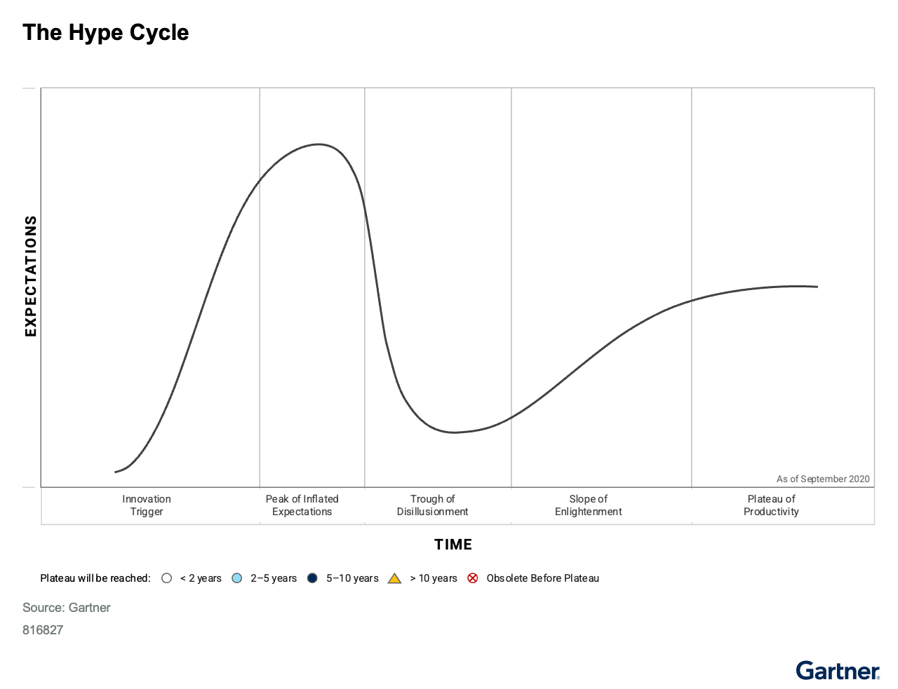
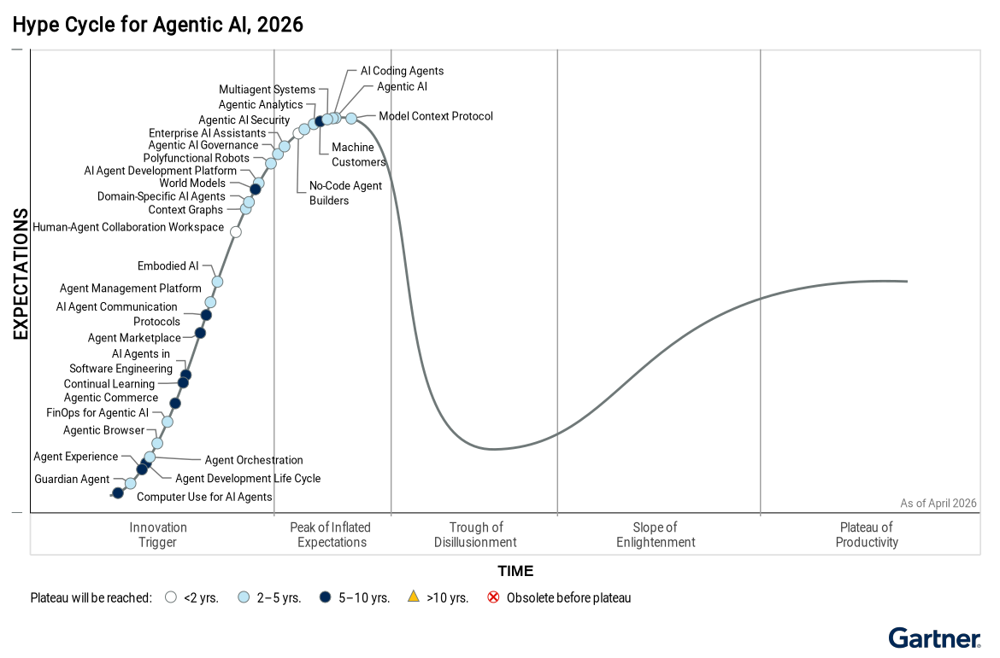

과열된 기대만 보고 기술을 도입하면 투자 판단이 흔들린다. 반대로 실망 국면만 보고 손을 떼면 뒤늦게 생산성 구간을 놓친다. 하이프 사이클은 이런 오판을 줄이도록 기술의 현재 위치와 향후 도입 속도를 함께 보게 한다.
핵심 요약
하이프 사이클Hype Cycle — 신기술이 과열, 실망, 이해, 생산성 정착으로 이동하는 흐름을 그린 도식.은 기술의 성숙도와 도입 정도, 사업 문제 해결 적합성을 한 화면에 보여준다. 대부분의 혁신은 과도한 기대와 실망을 거친 뒤에야 주류 도입과 생산성에 이른다. 조직은 기술의 위치, 잠재 가치, 위험 감내 수준을 함께 봐야 적정 도입 시점을 정할 수 있다. 우선순위 매트릭스Priority Matrix — 기술의 기대 효용과 주류 도입까지 걸리는 시간을 함께 놓고 우선순위를 정하는 표.는 기대 효용과 주류 도입까지 걸리는 시간을 더해 우선순위 결정을 돕는다.

크게 보기Gartner’s Hype Cycle graph is essential for tracking the maturity and potential of innovations for various clients. The Hype Cycle comprises five phases — Innovation Trigger, Peak of Inflated Expectations, Trough of Disillusionment, Slope of Enlightenment and Plateau of Productivity.
Gartner’s Hype Cycle graph is essential for tracking the maturity and potential of innovations for various clients. The Hype Cycle comprises five phases — Innovation Trigger, Peak of Inflated Expectations, Trough of Disillusionment, Slope of Enlightenment and Plateau of Productivity.
닫기
크게 보기Agentic AI technologies are at various stages of hype, with most expected to mature in 2–10 years. Organizations should monitor progress and invest as solutions move from high expectations to practical productivity.
Agentic AI technologies are at various stages of hype, with most expected to mature in 2–10 years. Organizations should monitor progress and invest as solutions move from high expectations to practical productivity.
닫기문제 맥락
하이프 사이클과 우선순위 매트릭스는 CIO, IT 리더, CXO가 혁신을 평가하도록 돕는다. 평가는 인식된 가치, 사업 효용, 도입 속도, 향후 방향을 기준으로 이뤄진다. 각 혁신은 혁신 촉발, 부풀려진 기대의 정점, 환멸의 골Trough of Disillusionment — 초기 과열이 꺼지고 성능, 수익, 도입 속도 문제로 기대가 크게 낮아지는 단계., 깨달음의 비탈, 생산성 안정기Plateau of Productivity — 기술의 실제 효용이 검증돼 더 많은 조직이 낮아진 위험을 감수하고 도입하는 단계.의 다섯 단계를 지난다. 다만 모든 혁신이 같은 속도로 움직이지는 않는다.
조직은 예측 가능한 도입 함정에 자주 빠진다. 너무 일찍 도입하기도 하고, 너무 빨리 포기하기도 한다. 너무 늦게 도입하거나 너무 오래 붙드는 경우도 있다. 하이프 사이클은 현실적인 기대치를 세우고, 도입 결정을 위험 감내 수준과 사업 우선순위에 맞춰 이런 함정을 피하게 돕는다.
가트너는 해마다 여러 영역에서 100개가 넘는 하이프 사이클을 만든다. 이를 통해 1,500개가 넘는 혁신의 성숙도와 잠재력을 추적한다. 하이프 사이클의 가로축은 시간이다. 세로축은 기대치다.
가트너는 곡선 위의 개별 요소를 혁신이라고 부른다. 각 혁신은 그래프에서 점 하나로 표시한다. 어떤 혁신은 특정 기술이다. 다른 혁신은 방법론과 전략, 운영·소비 모델, 관리 규율과 표준, 역량과 능력처럼 더 상위의 개념일 수도 있다.
혁신은 보통 다섯 단계를 거쳐 생산성으로 간다. 혁신 촉발 단계에서는 기술적 돌파, 공개 시연, 제품 출시, 다른 사건이 언론과 업계의 관심을 일으킨다. 부풀려진 기대의 정점에서는 현재 역량보다 기대가 앞선다. 경우에 따라 금융 버블이 생기기도 한다. 환멸의 골에서는 성능 문제, 기대보다 느린 도입, 늦은 재무 성과 때문에 초기 열기가 사라진다. 깨달음의 비탈에서는 초기 도입자가 장애물을 넘고 효용을 보기 시작한다. 생산성 안정기에서는 실제 생산성과 효용이 입증돼 더 많은 조직이 낮아진 위험을 감수하고 도입한다.
혁신은 같은 속도로 움직이지 않는다. 가트너는 생산성 안정기에 도달하기까지 걸리는 시간으로 각 혁신을 구분한다. 흰색 원은 2년 미만이다. 연파란 원은 2년에서 5년이다. 진파란 원은 5년에서 10년이다. 노란 삼각형은 10년 초과다. 빨간 X가 있는 원은 안정기에 도달하기 전에 사라진다는 뜻이다. 시장에서 실패하거나, 경쟁 혁신에 밀리거나, 다른 혁신에 흡수된다는 뜻이다.
하이프 사이클 곡선에는 기대치를 키우는 두 동인이 들어 있다. 하나는 하이프다. 다른 하나는 성숙도다. 시장의 하이프가 커지면 혁신은 기대 정점으로 올라간다. 그러나 성숙도가 낮거나 예상 밖의 역풍이 있으면 비현실적 기대를 충족하지 못한다. 그러면 혁신은 환멸의 골로 떨어진다. 시간이 지나 성숙도가 높아지면 깨달음의 비탈을 오르고, 초기 도입자의 경험이 쌓이면서 주류 도입으로 간다.
가트너 애널리스트는 하이프와 성숙도에 대한 합의 평가를 바탕으로 혁신의 위치를 정한다. 기대 수준을 판단할 때는 다양한 시장 신호와 대리지표를 쓴다. 일부 입력은 정량 데이터지만, 하이프 사이클은 대체로 구조화된 정성 리서치 도구다. 초기 단계에서는 불확실성이 크므로 하이프와 시장 기대가 위치 판단에 더 크게 작용한다. 후반 단계에서는 성능과 도입 정보가 쌓이면서 성숙도의 비중이 커진다.
같은 혁신도 적용 분야와 산업에 따라 전혀 다른 위치에 있을 수 있다. 그래서 서로 다른 하이프 사이클에 다르게 표시될 수 있다. 예를 들어 지능형 자동화 기술의 활용과 시장 침투는 산업마다 다르다. 규제 산업은 생성형 AI와 에이전트형 AIagentic AI — 여러 단계의 일을 계획하고 도구를 써서 처리하는 AI 방식. 같은 기술로 업무 프로세스를 바꾸는 데 더 보수적이다. 금융서비스는 새 상품과 서비스를 만드는 핀테크 기업군이 별도로 형성돼 있다.
영향
조직은 불확실성과 과장, 빠르게 바뀌는 시장 신호 속에서 신기술 도입 압박을 계속 받는다. 구조화된 접근이 없으면 투자 판단이 비효율적으로 흐르거나, 중요한 기회를 놓친다.
조직은 눈에 띄는 혁신을 기대 정점에서 위험과 효용을 충분히 이해하지 않은 채 도입하곤 한다. 반대로 환멸의 골에 들어간 혁신은 지나치기 쉽다. 이런 판단 오류는 투자 낭비를 부르고, 경쟁 우위를 놓치게 하며, 가치 실현 시점을 늦춘다.
하이프 사이클은 구조화된 정성 의사결정 틀을 제공한다. 조직은 이 틀로 현실적인 기대치를 세우고, 시장 움직임을 예상하며, 도입 전략을 위험 감내 수준과 사업 가치에 맞출 수 있다. 각 단계에서 공급업체, 투자자, 경쟁사의 행동도 가늠할 수 있어 인재와 파트너십, 기회를 더 이르게 확보할 수 있다.
우선순위 매트릭스는 혁신의 효용과 위험을 명시적으로 비교하게 한다. 그래서 도입 결정이 시점과 잠재 영향 둘 다를 반영하게 만든다.
시사점
가트너의 하이프 사이클은 어떤 혁신이 등장할 때 반복되는 공통 패턴을 보여준다. 혁신은 대개 과도한 열광을 거쳐 실망으로 내려간 뒤, 시장이나 업무 영역에서 자기 역할과 관련성을 인정받는다.
독자는 하이프 사이클의 단계와 구성요소, 가트너가 혁신을 어디에 배치하는지 이해해야 한다. 하이프 사이클을 활용할 때 반복되는 함정과 기회도 함께 봐야 한다. 각 조직은 자기 위험과 기회 우선순위에 맞는 도입 전략을 세워야 한다. 자주 나오는 질문도 이 틀 안에서 풀 수 있다.